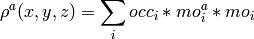
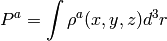

Function Reference¶
Central Variables¶
The following variables are the central variables in orbkit and are global within orbkit.main.
- geo_info¶
Contains information about the atoms and is only required for the creation of the output file.
- Type: list of str
- Shape: (number of atoms, 3)
- Members:
1st element: atom symbol 2nd element: atom number (according to the input file) 3rd element: nuclear charge of atom (if present in the input file)
- geo_spec¶
Contains the atom positions in Bohr.
- Type: numpy.ndarray or list of floats
- Shape: (number of atoms, 3)
- ao_spec¶
Contains all information about the atomic orbitals.
- Type: list of dictionaries
- number of dictionaries corresponds to number of contracted Gaussians
- Members:
pnum: - Number of number of primitives (integer)
atom: - Atom number (according to the input file, i.e., starting from 1) (integer)
coeffs: - numpy.ndarray
- Shape: (number of primitives, 2)
1st element: coefficient 2nd element: exponent
- mo_spec¶
Contains all information about the molecular orbitals.
- Type: list of python dictionaries
- number of dictionaries corresponds to number of molecular orbitals
- Members:
energy: - Energy of molecular orbital (float)
occ_num: - Occupation of molecular orbital (float)
sym: - Symmetry of molecular orbital (string, MOLPRO-like: e.g., 12.1 or 12.A1)
coeffs: - Molecular orbital coefficients (numpy.ndarray)
- Shape: (number of atomic orbitals, )
- (delta_)ao_list
numpy.ndarray containing (the derivatives of) all atomic orbitals on the specified grid.
- (delta_)mo_list
numpy.ndarray containing (the derivatives of) all molecular orbitals on the specified grid.
- (delta_)rho
numpy.ndarray containing (the derivatives of) the electron density on the specified grid.
orbkit.options¶
Module containing and processing all orbkit options.
Input/Output Options¶
- orbkit.options.filename = ''¶
Specifies input file name. (str)
- orbkit.options.outputname = None¶
Specifies output file (base) name. (str)
Computational Options¶
- orbkit.options.numproc = 1¶
Specifies number of subprocesses for multiprocessing. (int)
- orbkit.options.mo_set = False¶
Specifies molecular orbitals used for density calculation. (filename)
- orbkit.options.calc_mo = False¶
Specifies which molecular orbitals will be calculated. (filename)
- orbkit.options.all_mo = False¶
If True, all molecular orbitals will be computed. (bool)
- orbkit.options.drv = None¶
Specifies derivative variables. (list of str)
Additional Options¶
- orbkit.options.z_reduced_density = False¶
If True, reduces the density with respect to the z-axis. (bool)
- orbkit.options.atom_projected_density = None¶
Computes the atom-projected electron density with respect to specified atom. (int or list of int)
- orbkit.options.mo_tefd = None¶
Computes the molecular orbital transition electronic flux density between the orbitals I and J specify the requested component with orbkit.options.drv. (list of [I, J])
Options for Advanced Users¶
- orbkit.options.quiet = False¶
If True, omits terminal output. (bool)
- orbkit.options.no_log = False¶
If True, omits logfile output. (bool)
- orbkit.options.no_output = False¶
If True, omits creation of output. (bool)
- orbkit.options.no_slice = False¶
If True, omits slicing of the grid. (bool)
- orbkit.options.interactive = False¶
If True, asks user to select unclarified options. (bool)
Options for developers¶
- orbkit.options.get_options()¶
Returns all possible options and their value.
- orbkit.options.check_options(error=<built-in method write of file object at 0x2aed723da150>, display=<built-in method write of file object at 0x2aed723da150>, interactive=False, info=True)¶
Checks options for errors.
Parameters:
- error : function, optional
- Handles the errors.
- display : function, optional
- Handles the print commands.
- interactive : bool, optional
- If True and a file does not exist, asks the user to insert name of existing file.
- info : bool, optional
- If True, some additional information is printed.
Default Error and Exception Handling: Prints the errors and continues.
- orbkit.options.check_if_exists(fid, what='', error=<type 'exceptions.IOError'>, display=<built-in method write of file object at 0x2aed723da150>, interactive=False)¶
Checks the existence of a file.
Parameters:
- fid : string
- Specifies filename of the requested file.
- what : string, optional
- Describes the file.
- error : function, optional
- Handles the errors.
- display : function, optional
- Handles the print commands.
- interactive : bool, optional
- If True and a file does not exist, asks the user to insert name of existing file.
Returns:
- fid : string
- Specifies filename of the requested file.
- orbkit.options.reset_grid()¶
Resets the grid parameters.
orbkit.main¶
Module for controlling all computational tasks.
- orbkit.main.init()¶
Resets all orbkit.options.
- orbkit.main.main()¶
Controls the execution of all computational tasks.
- orbkit.main.run_standalone()¶
Starts orbkit as a standalone program using parser options (orbkit.core.init_parser).
orbkit.read¶
Module for reading the output files of quantum chemical software.
- orbkit.read.main_read(filename, itype='molden', all_mo=False)¶
Calls the requested read function.
Parameters:
- filename : str
- Specifies the filename for the input file.
- itype : str, choices={‘molden’, ‘gamess’, ‘gaussian.log’, ‘gaussian.fchk’}
- Specifies the type of the input file.
- all_mo : bool, optional
- If True, all molecular orbitals are returned.
Returns:
- geo_spec, geo_info, ao_spec, mo_spec :
- See Central Variables for details.
- orbkit.read.read_gamess(filename, all_mo=False)¶
Reads all information desired from a Gamess-US output file.
Parameters:
- filename: str
- Specifies the filename for the input file.
- all_mo: bool, optional
- If True, all molecular orbitals are returned.
Returns:
- geo_spec, geo_info, ao_spec, mo_spec :
- See Central Variables for details.
- orbkit.read.read_gaussian_fchk(filename, all_mo=False)¶
Reads all information desired from a Gaussian FChk file.
Parameters:
- filename: str
- Specifies the filename for the input file.
- all_mo: bool, optional
- If True, all molecular orbitals are returned.
Returns:
- geo_spec, geo_info, ao_spec, mo_spec :
- See Central Variables for details.
- orbkit.read.read_gaussian_log(filename, all_mo=False, orientation='standard', i_geo=-1, i_ao=-1, i_mo=-1, interactive=True)¶
Reads all information desired from a Gaussian .log file.
Parameters:
- filename : str
- Specifies the filename for the input file.
- all_mo : bool, optional
- If True, all molecular orbitals are returned.
- orientation : string, choices={‘input’, ‘standard’}, optional
- Specifies orientation of the molecule in Gaussian nomenclature. [1]
- i_geo : int, default=-1
- Selects the geometry section of the output file.
- i_ao : int, default=-1
- Selects the atomic orbital section of the output file.
- i_mo : int, default=-1
- Selects the molecular orbital section of the output file.
- interactive : bool
- If True, the user is asked to select the different sets.
Returns:
- geo_spec, geo_info, ao_spec, mo_spec :
- See Central Variables for details.
[1] Attention: The MOs in the output are only valid for the standard orientation!
- orbkit.read.read_molden(filename, all_mo=False)¶
Reads all information desired from a molden file.
Parameters:
- filename : str
- Specifies the filename for the input file.
- all_mo : bool, optional
- If True, all molecular orbitals are returned.
Returns:
- geo_spec, geo_info, ao_spec, mo_spec :
- See Central Variables for details.
orbkit.grid¶
Module for creating and manipulating the grid on which all computations are performed.
- orbkit.grid.N_ = [101, 101, 101]¶
Specifies the number of grid points (regular grid).
- orbkit.grid.center_grid(ac, display=<built-in method write of file object at 0x2aed723da150>)¶
Centers the grid to the point ac and to the origin (0,0,0).
- orbkit.grid.delta_ = array([[ 0.], [ 0.], [ 0.]])¶
Contains the grid spacing.
- orbkit.grid.get_grid(start='\t')¶
Returns a string describing the current x-, y-, z-grid.
- orbkit.grid.grid2vector()¶
Converts the regular grid characterized by x-, y-, z-vectors to a (3, (Nx*Ny*Nz)) grid matrix (vector grid). Reverse operation: orbkit.grid.vector2grid
- orbkit.grid.grid_init(is_vector=False)¶
Sets up the regular x-, y-, z-grid specified by the global lists:
min_: List of minimum grid values max_: List of maximum grid values N_: List of number of grid points Parameters:
- is_vector : bool, optional
- If True, converts the regular grid to a vector grid.
- orbkit.grid.is_initialized = False¶
If True, the grid is assumed to be initialized.
- orbkit.grid.max_ = [8.0, 8.0, 8.0]¶
Specifies maximum grid values (regular grid).
- orbkit.grid.min_ = [-8.0, -8.0, -8.0]¶
Specifies minimum grid values (regular grid).
- orbkit.grid.random_grid(geo_spec, N=1000000.0, scale=0.5)¶
Creates a normally distributed grid around the atom postions (geo_spec).
Parameters:
- geo_spec :
- See Central Variables for details.
- N : int
- Number of points distributed around each atom
- scale : float
- Width of normal distribution
- orbkit.grid.read(filename, comment='#')¶
Reads a grid from a plain text file.
Parameters:
- fid : str
- Specifies the filename of the grid file.
Returns:
- is_vector : bool
- If True, a vector grid is used for the computations.
Supported Formats:
Regular Grid: The input has the following formatx xmin xmax Nxy ymin ymax Nyz zmin zmax NzE.g.,x -5 5 11y -2 2 5z 0 0 1Vector-Grid: The input has the following formatx y z5 -5 02 7 0...Hint: If a line starts with ‘#’, it will be skipped. Please, do not use ‘#’ at the end of a line!
- orbkit.grid.sph2cart_vector(r, theta, phi)¶
Converts a spherical regular grid matrix (r, theta, phi) to a Cartesian grid matrix (vector grid) with the shape (3, (Nr*Ntheta*Nphi)).
Parameters:
- r : numpy.ndarray, shape=(Nr,)
- Specifies radial distance.
- theta : numpy.ndarray, shape=(Ntheta,)
- Specifies polar angle.
- phi : numpy.ndarray, shape=(Nphi,)
- Specifies azimuth angle.
- orbkit.grid.vector2grid()¶
Converts the (3, (Nx*Ny*Nz)) grid matrix (vector grid) back to the regular grid characterized by the x-, y-, z-vectors. Reverse operation: orbkit.grid.grid2vector
- orbkit.grid.x = [0]¶
Contains the x-coordinates.
- orbkit.grid.y = [0]¶
Contains the y-coordinates.
- orbkit.grid.z = [0]¶
Contains the z-coordinates.
orbkit.core¶
Module performing all computational tasks.
- orbkit.core.ao_code(is_vector=False, is_drv=False)¶
Returns the requested C++ code.
Parameters:
- is_vector : bool
- If True, returns the code for the computation of an atomic orbital on a vecotrized grid_file.
- is_drv : bool
- If True, returns the code for the computation of the derivative of an atomic orbital.
- orbkit.core.ao_creator(geo_spec, ao_spec, exp_list=False, is_vector=False, drv=None, x=None, y=None, z=None, N=None)¶
Calculates all contracted atomic orbitals or its derivatives with respect to a specific variable (e.g. drv = ‘x’ or drv = 0).
Parameters:
- geo_spec,ao_spec :
- See Central Variables in the manual for details.
- sel_ao : int
- Index of the requested atomic orbital
- exp_list : bool, optional
- If True, takes the xyz-exponents from ao_spec[i][‘Exponents’], else the standard molden exponents (exp) for quantum number l will be used.
- is_vector : bool, optional
- If True, a vectorized grid will be applied
- drv : int or string, {None, ‘x’, ‘y’, ‘z’, 0, 1, 2}, optional
- If not None, an analytical calculation of the derivatives for the atomic orbitals with respect to DRV is requested.
- x,y,z : None or list of floats, optional
- If not None, provides a list of Cartesian coordinates, else the respective coordinates of grid. will be used
- N : None or tuple, optional
- If not None, provides the shape of the grid.
Returns:
- ao_list : numpy.ndarray, shape=((NAO,) + N)
- Contains the computed NAO atomic orbitals on a grid.
- orbkit.core.calc_single_mo(xx)¶
Computes a single molecular orbital.
This function is called by the multiprocessing module in the orbkit.core.mo_creator.
Parameters:
- xx : int
- Specifies which molecular orbital shall be computed, i.e., mo_spec[xx].
- Spec : dict, global
- Dictionary containing all required varibles:
ao_list: : List of atomic orbitals on a grid. mo_spec: : List of dictionaries (see Central Variables for details). N: : Tuple containing the shape of the grid.
Returns:
- mo : numpy.ndarray, shape=(N)
- Contains the molecular orbitals on a grid.
- orbkit.core.init_parser()¶
Initializes parser and processes the options.
- orbkit.core.is_compiled(code)¶
Checks if the C++ code is already compiled.
Adaped from weave.inline_tools().
- orbkit.core.l_creator(geo_spec, ao_spec, sel_ao, exp_list=None, coeff_list=None, at_pos=None, is_vector=False, drv=None, x=None, y=None, z=None, N=None)¶
Calculates the contracted atomic orbitals of quantum number l or its derivative with respect to a specific variable (e.g. drv = ‘x’ or drv = 0) for the atomic orbitals: ao_spec[sel_ao].
Parameters:
- geo_spec,ao_spec :
- See Central Variables for details.
- sel_ao : int
- Index of the requested atomic orbitals
- exp_list : array_like, shape=(NDEG, 3), optional
- If not None, list of xyz-exponents of the NDEG degenerate atomic orbitals ,i.e., NDEG=len(exp_list), else the standard molden exponents (exp) for quantum number l will be used.
- coeff_list : array_like, shape=(PNUM, 2), optional
- If not None, list of the PNUM primitive atomic orbital exponents [:,0] and coefficients [:,1], else the coefficients from ao_spec[sel_ao] will be used.
- at_pos : array_like, shape=(3,), optional
- If not None, xyz-coordinates where the atomic orbital is centered, else the position geo_spec[ao_spec[sel_ao][‘atom’]] will be used.
- is_vector : bool, optional
- If True, a vectorized grid will be applied.
- drv : int or string, {None, ‘x’, ‘y’, ‘z’, 0, 1, 2}, optional
- If not None, a derivative calculation of the atomic orbitals is requested.
- compile_only : bool, optional
- If True, compiles only the C++ code.
- x,y,z : list of floats, optional
- If not None, provides a list of Cartesian coordinates, else the respective coordinates of the module orbkit.grid will be used.
- N : tuple
- If not None, provides the shape of the grid.
Returns:
- ao_list : numpy.ndarray, shape=((NDEG,) + N)
- Contains the computed NGED=len(exp_list) atomic orbitals on a grid.
Information:
We use scipy.weave.inline to run C++ Code within the python environment. http://docs.scipy.org/doc/numpy/user/c-info.python-as-glue.html#inline-c-code
- orbkit.core.l_deg(l=0, ao=None)¶
Calculates the degeneracy of a given atomic orbitals.
Options:
- Works with the molpro output nomenclature for Cartesian Harmonics:
- s->’s’, p->[‘x’,’y’,’z’], d-> [‘xx’,’yy’, etc.], etc. e.g., l_deg(ao=’xxy’)
- Works with quantum number l for the Cartesian Harmonic:
- e.g., l_deg(l=1)
- Works with name of the Cartesian Harmonic:
- e.g., l_deg(l=’p’)
- orbkit.core.mo_creator(ao_list, mo_spec, is_vector=False, x=None, y=None, z=None, N=None, HDF5_save=False, h5py=False, s=0)¶
Calculates the molecular orbitals.
If a string (filename) is given for the argument HDF5_save, the slice s of each molecular orbital will be saved to the disk. This module is used by orbkit.extras.save_mo_hdf5(), where the HDF5 file is initialized.
Parameters:
- ao_list : numpy.ndarray, shape=((NAO,) + N)
- Contains the NAO atomic orbitals on a grid.
- mo_spec : List of dictionaries
- See Central Variables for details.
- is_vector : bool, optional
- If True, a vectorized grid will be applied.
- x,y,z : None or list of floats, optional
- If not None, provide a list of Cartesian coordinates, else the respective coordinates of grid will be used.
- N : None or tuple, optional
- If not None, provides the shape of the grid.
- HDF5_save : False or string, optional
- If not False, filename of HDF5 file for storing the molecular orbitals. (Requires Parameters: h5py and s)
- h5py : python module
- required if HDF5_save is not False
- s : int, required if HDF5_save is not False
- Specifies which slice of the molecular orbital has to be computed.
Returns:
- mo_list : numpy.ndarray, shape=((NMO,) + N)
- Contains the NMO=len(mo_spec) molecular orbitals on a grid.
- orbkit.core.rho_compute(geo_spec, ao_spec, mo_spec, calc_mo=False, vector=None, drv=None)¶
Calculate the density, the molecular orbitals, or the derivatives thereof.
orbkit divides 3-dimensional regular grids into 2-dimensional slices and 1-dimensional vector grids into 1-dimensional slices of equal length. By default, 3-dimensional grids are used (vector=None). The computational tasks are distributed to the worker processes.
Parameters:
- geo_spec : array_like, shape=(3,NATOMS)
- See Central Variables for details.
- ao_spec : List of dictionaries
- See Central Variables for details.
- mo_spec : List of dictionaries
- See Central Variables for details.
- calc_mo : bool, optional
- If True, the computation of the molecular orbitals requested is only carried out.
- vector : None or int, optional
- If not None, performs the computations on a vectorized grid, i.e., with x, y, and z as vectors.
- drv : string or list of strings {None,’x’,’y’, or ‘z’}, optional
- If not None, computes the analytical derivative of the requested quantities with respect to DRV.
- grid : module or class, global
- Contains the grid, i.e., grid.x, grid.y, and grid.z.
Returns:
if calc_mo and drv is None: - mo_list
if calc_mo and drv is not None: - delta_mo_list
if not calc_mo and drv is None: - rho
if not calc_mo and drv is not None: - rho, delta_rho
- mo_list : numpy.ndarray, shape=((NMO,) + N)
- Contains the NMO=len(mo_spec) molecular orbitals on a grid.
- delta_mo_list : numpy.ndarray, shape=((NDRV,NMO) + N)
- Contains the derivatives with respect to drv (NDRV=len(drv)) of the NMO=len(mo_spec) molecular orbitals on a grid.
- mo_norm : numpy.ndarray, shape=(NMO,)
- Contains the numerical norms of the molecular orbitals.
- rho : numpy.ndarray, shape=(N)
- Contains the density on a grid.
- delta_rho : numpy.ndarray, shape=((NDRV,) + N)
- Contains derivatives with respect to drv (NDRV=len(drv)) of the density on a grid.
- orbkit.core.rho_compute_no_slice(geo_spec, ao_spec, mo_spec, calc_mo=False, is_vector=False, drv=None, return_components=False)¶
Calculates the density, the molecular orbitals, or the derivatives thereof without slicing the grid.
Parameters:
- geo_spec : array_like, shape=(3,NATOMS)
- See Central Variables for details.
- ao_spec : List of dictionaries
- See Central Variables for details.
- mo_spec : List of dictionaries
- See Central Variables for details.
- calc_mo : bool, optional
- If True, the computation of the molecular orbitals requested is only carried out.
- is_vector : bool, optional
- If True, performs the computations for a vectorized grid, i.e., with x, y, and z as vectors.
- drv : string or list of strings {None,’x’,’y’, or ‘z’}, optional
- If not None, computes the analytical derivative of the requested quantities with respect to DRV.
- return_components : bool, optional
- If True, returns the atomic and molecular orbitals, and the density, and if requested, the derivatives thereof as well.
- grid : module or class, global
- Contains the grid, i.e., grid.x, grid.y, and grid.z.
Returns:
if not return_components: if calc_mo and drv is None: - mo_list
if calc_mo and drv is not None: - delta_mo_list
if not calc_mo and drv is None: - rho
if not calc_mo and drv is not None: - rho, delta_rho
else: if calc_mo and drv is None: - ao_list,mo_list
if calc_mo and drv is not None: - delta_ao_list,delta_mo_list
if not calc_mo and drv is None: - ao_list,mo_list,rho
if not calc_mo and drv is not None: - ao_list, mo_list, rho, delta_ao_list, delta_mo_list, delta_rho
- ao_list : numpy.ndarray, shape=((NAO,) + N)
- Contains the NAO=len(ao_spec) atomic orbitals on a grid.
- delta_ao_list : numpy.ndarray, shape=((NDRV,NAO) + N)
- Contains the derivatives with respect to drv (NDRV=len(drv)) of the NAO=len(ao_spec) atomic orbitals on a grid.
- mo_list : numpy.ndarray, shape=((NMO,) + N)
- Contains the NMO=len(mo_spec) molecular orbitals on a grid.
- delta_mo_list : numpy.ndarray, shape=((NDRV,NMO) + N)
- Contains the derivatives with respect to drv (NDRV=len(drv)) of the NMO=len(mo_spec) molecular orbitals on a grid.
- mo_norm : numpy.ndarray, shape=(NMO,)
- Contains the numerical norms of the molecular orbitals.
- rho : numpy.ndarray, shape=(N)
- Contains the density on a grid.
- delta_rho : numpy.ndarray, shape=((NDRV,) + N)
- Contains the derivatives with respect to drv (NDRV=len(drv)) of the density on a grid.
- orbkit.core.slice_rho(xx)¶
Calculates the density, the molecular orbitals, or the derivatives thereof with respect to Spec[‘Derivative’] for one slice (xx)
This function is called by the multiprocessing module in the orbkit.core.rho_compute.
Parameters:
- xx : [float] or [int, int]
Specifies which slice in x-direction shall be computed.
If not is_vector: One slice at x=xx will be computed.Else: One slice from index xx[0] to xx[1] will be calculated.- Spec : dict, global
- Dictionary containing all required varibles:
geo_spec: List of floats, shape=(NATOMS, 3) (see Central Variables for details). ao_spec: List of dictionaries (see Central Variables for details). mo_spec: List of dictionaries (see Central Variables for details). calc_mo: Bool if only the molecular orbitals are requested. is_vector: Bool if a vectorized grid is used. Derivative: List of strings, choices={‘x’,’y’, or ‘z’}. If not None, derivative calculation will be carried out.
- grid : module or class, global
- Contains the grid, i.e., grid.x, grid.y, and grid.z.
Returns:
if calc_mo and drv is None: - mo_list
if calc_mo and drv is not None: - delta_mo_list
if not calc_mo and drv is None: - rho, mo_norm
if not calc_mo and drv is not None: - rho, mo_norm, delta_rho
- mo_list : numpy.ndarray, shape=((NMO,) + N)
- Contains the NMO=len(mo_spec) molecular orbitals on a grid.
- delta_mo_list : numpy.ndarray, shape=((NDRV,NMO) + N)
- Contains the derivatives with respect to drv (NDRV=len(drv)) of the NMO=len(mo_spec) molecular orbitals on a grid.
- rho : numpy.ndarray, shape=(N)
- Contains the density on a grid.
- delta_rho : numpy.ndarray, shape=((NDRV,) + N)
- Contains the derivatives with respect to drv (NDRV=len(drv)) of the density on a grid.
orbkit.display¶
Module for writing the .oklog files and printing the terminal output.
- orbkit.display.display(string)¶
Prints string to the terminal output and to the .oklog file.
- orbkit.display.init(name=None)¶
Sets the name of the .oklog file and removes the old .oklog file.
- orbkit.display.is_initiated = False¶
If True, logfile is initialized.
orbkit.output¶
Module for creating the requested output files.
- orbkit.output.main_output(data, geo_info, geo_spec, outputname='new', otype='h5', data_id='rho', ao_spec=None, mo_spec=None, no_hdf5=False, is_vector=False, is_mo_output=False, drv=None)¶
Creates the requested output.
- orbkit.output.HDF5_creator(data, outputname, geo_info, geo_spec, data_id='rho', append=None, data_only=False, ao_spec=None, mo_spec=None, is_mo_output=False, x=None, y=None, z=None)¶
Creates an HDF5 file (Hierarchical Data Format) output.
- orbkit.output.amira_creator(rho, filename)¶
Creates a ZIBAmira mesh file. (plain text)
- orbkit.output.hx_network_creator(rho, filename)¶
Creates a ZIBAmira hx-network file including a colormap file (.cmap) adjusted to the density for the easy depiction of the density.
- orbkit.output.cube_creator(rho, filename, geo_info, geo_spec)¶
Creates a plain text Gaussian cube file.
orbkit.extras¶
Module for all additional features of orbkit.
- orbkit.extras.atom2index(atom, geo_info=None)¶
Converts a list of atom numbers to indices of geo_info.
- orbkit.extras.atom_projected_density(atom, geo_spec, ao_spec, mo_spec, geo_info=None, bReturnmo=False, ao_list=None, mo_list=None, x=None, y=None, z=None, N=None, is_vector=False)¶
Computes the projected electron density with respect to the selected atoms.

Parameters:
- atom : int or list of int
- Specifies the atoms to which the projected electron density will be computed.
- geo_spec, geo_info, ao_spec, mo_spec :
- See Central Variables for details.
- bReturnmo : bool, optional
- If True, the atom projected molecular orbitals are additionally returned.
Returns:
- rho_atom : list of numpy.ndarrays, shape=(len(atoms,) + N)
- Contains the atom projected electron density on a grid.
- mo_atom : list of numpy.ndarrays, shape=(len(atoms,NMO) + N)
- Contains the NMO=len(mo_spec) atom projected molecular orbitals on a grid.
- orbkit.extras.calc_mo(geo_spec, geo_info, ao_spec, mo_spec, fid_mo_list, drv=None, vector=None, otype=None)¶
Calculates and saves the selected molecular orbitals or the derivatives thereof.
Parameters:
- geo_spec, geo_info, ao_spec, mo_spec :
- See Central Variables for details.
- fid_mo_list : str
- Specifies the filename of the molecular orbitals list. If fid_mo_list is ‘all_mo’, creates a list containing all molecular orbitals.
- otype : str or list of str, optional
- Specifies output file type. See otypes for details.
- drv : int or string, {None, ‘x’, ‘y’, ‘z’, 0, 1, 2}, optional
- If not None, a derivative calculation of the atomic orbitals is requested.
- vector : None or int, optional
- If not None, performs the computations on a vectorized grid, i.e., with x, y, and z as vectors.
- Returns:
- mo_list :
- See Central Variables for details.
- mo : dict
- Contains information of the selected molecular orbitals and has following Members:
mo: - List of molecular orbital labels.
mo_ii: - List of molecular orbital indices.
mo_spec: - Selected elements of mo_spec. See Central Variables for details.
mo_in_file: - List of molecular orbital labels within the fid_mo_list file.
sym_select: - If True, symmetry labels have been used.
- orbkit.extras.compute_mulliken_charges(atom, geo_info, geo_spec, ao_spec, mo_spec, ao_list=None, mo_list=None, rho_atom=None, x=None, y=None, z=None, N=None, is_vector=False)¶
Compute the Mulliken charges of the selected atoms using the respective projected electron densities.

Parameters:
- atom : int or list of int
- Compute the numerical Mulliken charges of which atom.
Returns:
- geo_spec, geo_info, ao_spec, mo_spec :
- See the Central Variables in the manual for details.
- orbkit.extras.mo_select(mo_spec, fid_mo_list)¶
Selects molecular orbitals from an external file.
Parameters:
- mo_spec :
- See Central Variables for details.
- fid_mo_list : str
- Specifies the filename of the molecular orbitals list. If fid_mo_list is ‘all_mo’, creates a list containing all molecular orbitals.
Supported Formats:
Integer List:
1 2 3
List with Symmetry Labels:
1.1 2.1 1.3 1.1 4.1 4.1 2.3 2.1
Returns:
- Dictionary with following Members:
mo: - List of molecular orbital labels.
mo_ii: - List of molecular orbital indices.
mo_spec: - Selected elements of mo_spec. See Central Variables for details.
mo_in_file: - List of molecular orbital labels within the fid_mo_list file.
sym_select: - If True, symmetry labels have been used.
- orbkit.extras.mo_set(geo_spec, geo_info, ao_spec, mo_spec, fid_mo_list, drv=None, vector=None, otype=None)¶
Calculates and saves the density or the derivative thereof using selected molecular orbitals.
Parameters:
- geo_spec, geo_info, ao_spec, mo_spec :
- See Central Variables for details.
- fid_mo_list : str
- Specifies the filename of the molecular orbitals list. If fid_mo_list is ‘all_mo’, creates a list containing all molecular orbitals.
- otype : str or list of str, optional
- Specifies output file type. See otypes for details.
- drv : int or string, {None, ‘x’, ‘y’, ‘z’, 0, 1, 2}, optional
- If not None, a derivative calculation of the atomic orbitals is requested.
- vector : None or int, optional
- If not None, performs the computations on a vectorized grid, i.e., with x, y, and z as vectors.
- orbkit.extras.mo_transition_flux_density(i, j, geo_spec, ao_spec, mo_spec, drv='x', ao_list=None, mo_list=None, delta_ao_list=None, delta_mo_list=None, x=None, y=None, z=None, N=None, is_vector=False)¶
Calculate one component (e.g. drv=’x’) of the transition electoronic flux density between the molecular orbitals i and j.

Parameters:
- i: int
- index of the first mo (Bra)
- j: int
- index of the second mo (Ket)
- drv: {0,1,2,’x’,’y’,’z’}
- The desired component of the vector field of the transition electoronic flux density
Returns:
mo_tefd : numpy.ndarray
- orbkit.extras.save_mo_hdf5(filename, geo_info, geo_spec, ao_spec, mo_spec, x=None, y=None, z=None, N=None)¶
Calculate and save selected MOs to an HDF5 File requiering only a small amount of the RAM.